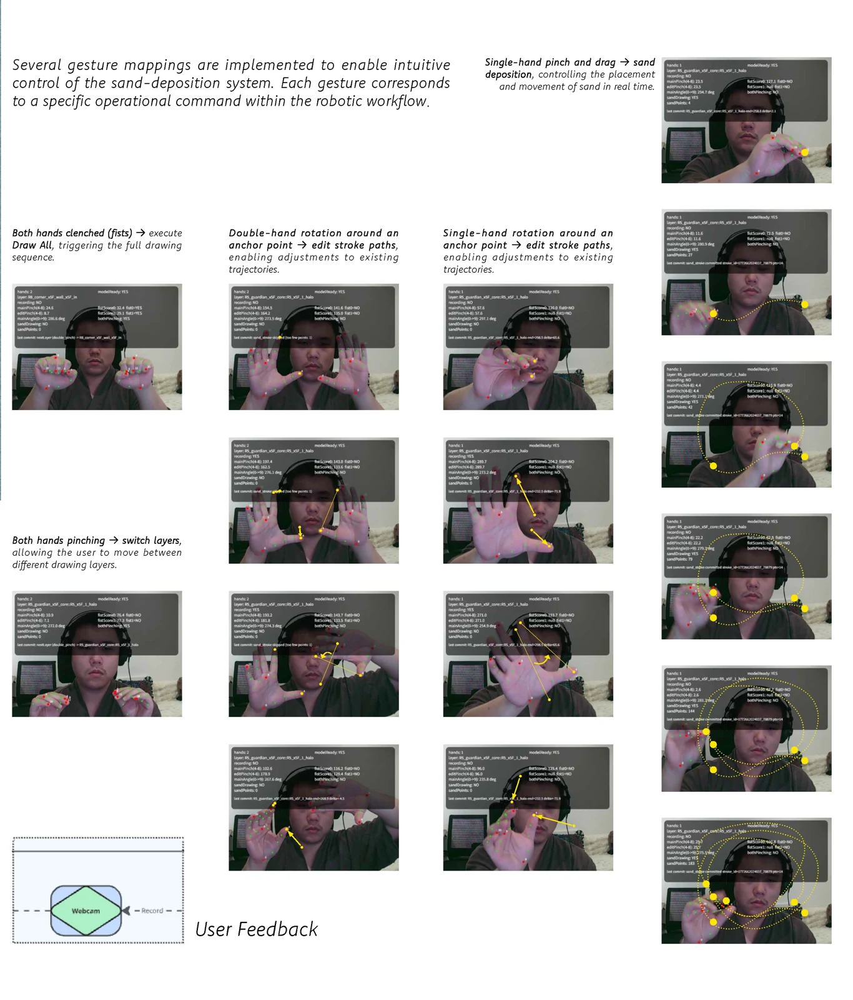
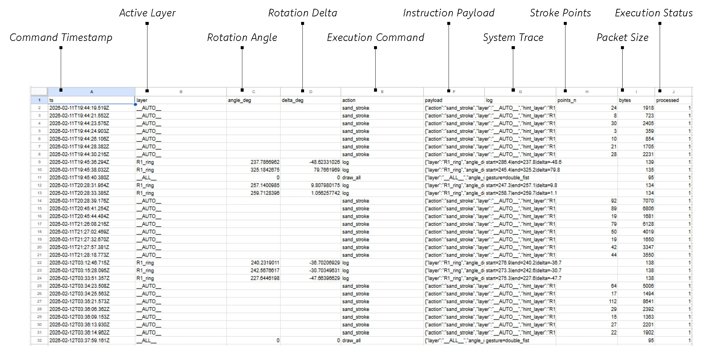
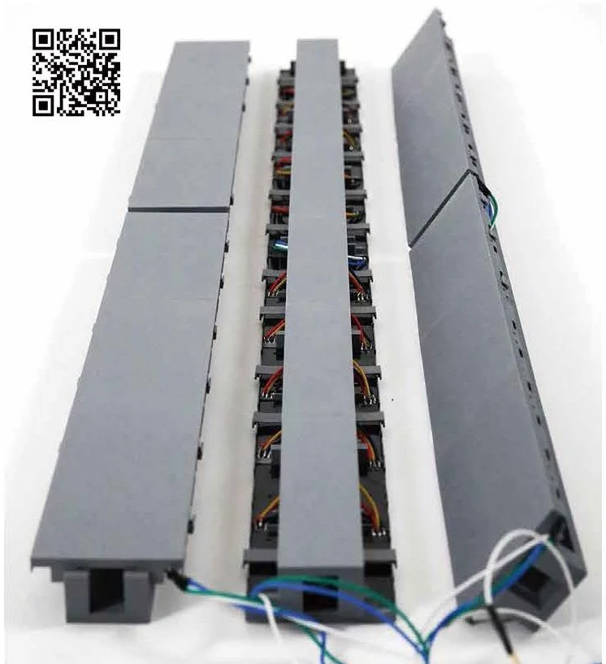
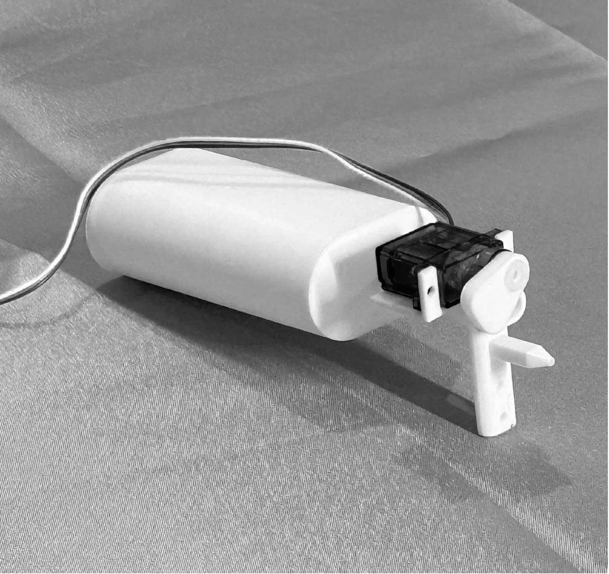
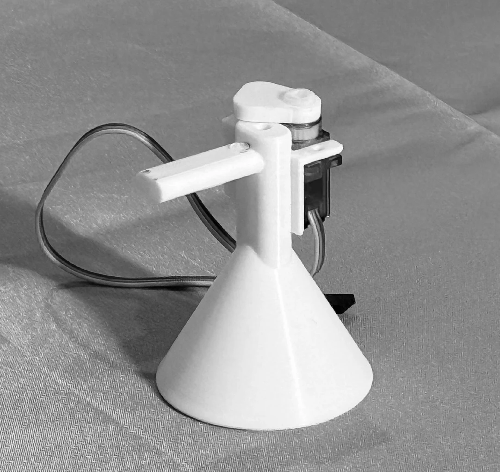
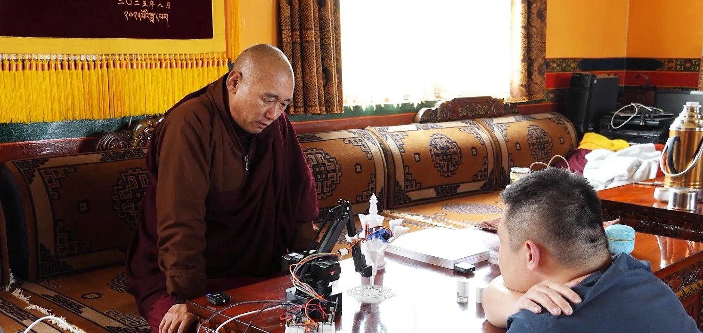
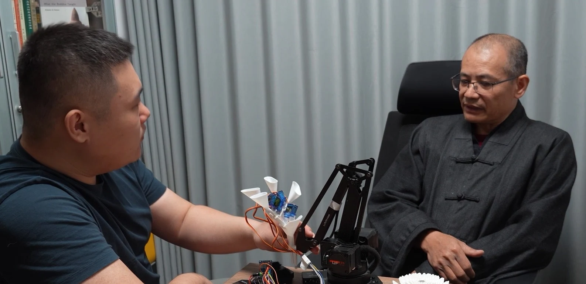

Remote rituals between physical and digital spaceSpatial proposal / visualisation
RoleCreative technologist & designer
PeriodSeptember 2025 – June 2026
FocusSpatial capture · Generative media · Robotics · Interaction
ToolsPython · FastAPI · p5.js · Zep · Local LLM · Seedance API · 3DGS
01 / Spatial capture & reconstruction
From physical environments to usable spatial data.
Capture is the upstream layer of my spatial-AI practice. Field data is not treated as a finished image: it is reconstructed, inspected and translated into editable spatial representations that can support design, digital-twin and interactive workflows.
Within Katla · Iceland
Landscape capture through LiDAR and Gaussian Splatting.
Environmental capture developed with Camille Dunlop used spatial scanning to retain terrain, scale, atmosphere and spatial relationships beyond conventional photographic documentation. Raw environmental data became a navigable, inspectable and reusable representation of place.
Sacred Intelligence · Tibet
Scan as evidence. Reconstruction as interpretation.
Tibetan Buddhist structures were recorded as Gaussian-splat datasets, inspected through orthographic projections and translated into cleaner architectural representations. Principal axes, silhouettes, height bands and repeated components were used to rebuild editable Rhino geometry.
Four captured structures · orthographic XY / XZ / YZ projections generated from Gaussian-splat data.
01AcquireLiDAR / image-based field capture.
02ReconstructGaussian Splatting and 3D scene reconstruction.
03InspectPLY export, coordinates and orthographic comparison.
04InterpretAxes, levels, envelopes and repeated modules.
05RebuildEditable Rhino geometry with scan-derived guides.
06DeploySpatial media, digital twins and interactive systems.
Working principle
Physical world → spatial data → interpretation → generative / embodied output.
02 / In practice
Two ways to make presence tangible.
How can people share a physical practice across distance? Sacred Intelligence explores this through two operational prototypes: a stateful responsive-media workflow and a gesture-driven robotic sand mandala system.
A
Knowledge → responsive media
Spoken input is interpreted through a contextual knowledge layer and transformed into video prompts. Zep preserves interaction context while Seedance generates visual content informed by mural references from Gongga Qude Monastery.
A p5.js interface translates hand gestures into structured commands for a Python robotic-arm controller. A custom end-effector enables controlled, multi-colour sand deposition.
I built and iteratively debugged the integrated system, connecting browser interaction, FastAPI/Python control, contextual memory, local LLM reasoning, knowledge retrieval and generative-media APIs.
01 / Input
Speech
Capture and transcribe spoken input.
02 / Context + memory
Zep + local LLM
Retrieve relevant context, preserve interaction state and interpret meaning.
03 / Direction
Video prompts
Translate the interpretation into prompts with mural references.
04 / Generation
Seedance API
Generate short video segments and post-process the output.
05 / Experience
Continuous playback
Keep existing media active while the next output generates.
The knowledge layer
Cultural context shapes the output.
A corpus of public lectures by Khenpo Sodargye was transcribed and structured into a machine-readable archive. Zep stores interaction context and surfaces relevant concepts, entities and relationships before the local LLM interprets each new input.
430+pages of source material
110,000+words in the archive
Reference material from Gongga Qude Monastery, organised into a visual library for the generative workflow.
01 / Input
Hand gestures
A webcam captures hand landmarks in a p5.js interface.
02 / Translation
Structured data
Position, orientation and movement become control commands.
03 / Control
Python controller
Commands are processed for robotic-arm execution.
04 / Making
Sand deposition
A custom head controls sand release and colour switching.
05 / Response
Physical drawing
The participant's input becomes a material trace.
The interaction layer
A direct connection between hand and machine.
The browser interface turns bodily input into commands for physical fabrication. Mandala geometry is also decomposed into components and structured data, preserving relationships between its parts.

Gesture-recognition studies and operational mappings.
04 / Operational thinking
Beyond a one-shot AI demo.
The project remained a prototype, but I treated it as a working system rather than a sequence of isolated outputs: maintaining context, separating services, preserving the participant experience during generation and logging machine execution.
01 / State & memory
Context persists between interactions.
Zep preserves conversational state and retrieves relevant material for the local LLM, so new inputs can be interpreted against prior context rather than as independent prompt calls.
02 / Orchestration
Multiple services act as one workflow.
Browser input, FastAPI/Python services, context retrieval, prompt construction, Seedance generation and playback are connected as distinct stages that can be tested and debugged independently.
03 / Continuity & UX
Generation does not interrupt the experience.
Existing media remains active while the next short video segment is generated, reducing visible downtime and allowing the responsive surface to feel continuous in use.
04 / Structured execution
Physical actions become inspectable data.
Gesture-derived actions are serialized into machine commands for the Python controller. During testing, execution logs recorded timestamps, actions, payloads, point counts and processing status.

Command and execution log used while debugging the robotic workflow.

Physical media prototype developed alongside the generative workflow.
05 / Technical documentation
The system behind the final experience.
The public case study stays concise. The technical project book records the deeper research and implementation process: system architecture, simulation logic, coding and testing, physical tool iterations, feedback and architectural integration.
103-page technical project book
Research, architecture, implementation and testing.
For readers who want to inspect the project beyond the final interface and prototypes, the full book documents how cultural knowledge, spatial simulation, software services and robotic fabrication were organised into one operational system.
OODA stakeholder modelC4 system architectureSimulation + structured world encodingCoding + final testingSeven physical tool iterationsArchitectural system integration
06–07Testing, Coding & Final IntegrationTool iterations / pipeline / feedback
08Device Movement StrategyPhysical system development
10Architectural IntegrationTechnical framework / system integration
06 / Build, test, refine
Making the system work beyond the first output.
Development moved between software testing, physical prototyping and practitioner review. The focus was on how the parts behaved together in use.
01
Interpretation
Refined local LLM prompts to improve how spoken meaning was interpreted through the Zep-based knowledge context and translated into video prompts.
02
Visual evaluation
Reviewed generated content for mural-style consistency and adjusted the generative workflow in response to the results.
03
Continuity
Maintained existing video playback during generation so the visual experience continued while the next output was being produced.
04
Integration
Tested and debugged the overall program, revising components and their connections when issues appeared during operation.
Physical development
Seven prototype iterations explored dispensing mechanics, material behaviour and robotic mounting.

04Angle-controlled dispenser

05–06Valve-controlled deposition07Multi-colour robotic head
07 / Review in context
Technology in dialogue with its practitioners.
I demonstrated the system to AI researchers and senior Buddhist monastics, explaining the technical workflow and creative decisions. Practitioner feedback informed how the prototypes could support embodied ritual practice.

Prototype demonstration and practitioner review during fieldwork.

Discussing operation, cultural context and the relationship to existing practice.